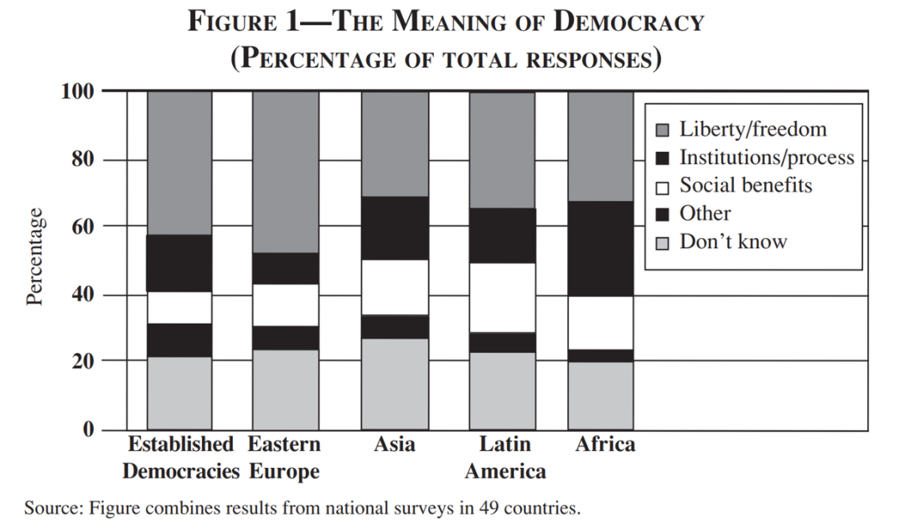
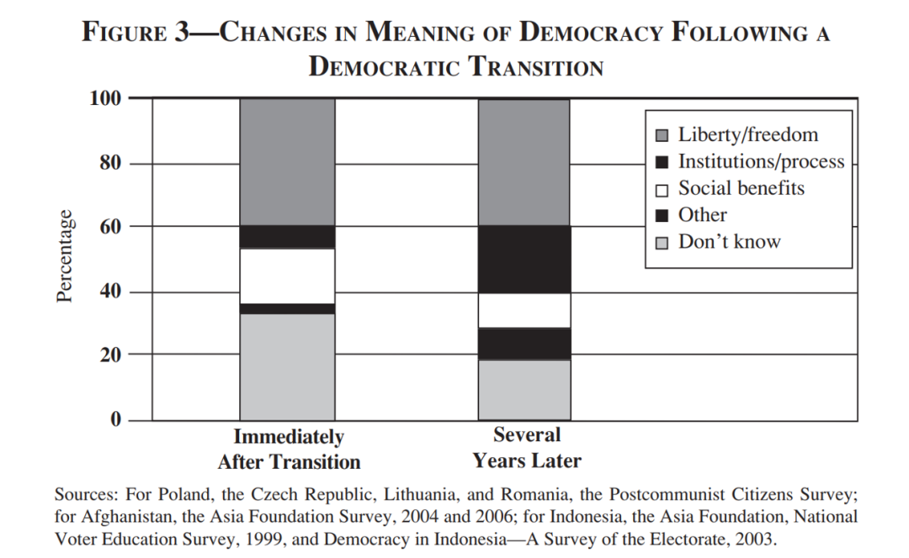

收录于合集
#政治态度 13 个
#民主与民主化 34 个
#比较政治学 121 个
文献来源： Russell J. Dalton, Doh C. Shin, and Willy Jou. (2007). Understanding Democracy: Data from Unlikely Places. Journal of Democracy 18(4): 142–156.
作者简介： Russell J. Dalton，加州大学尔湾分校政治学系教授；Doh Chull Shin，加州大学尔湾分校政治学系教授，时任密苏里大学政治学系教授；Willy Jou，早稻田大学政治经济学院副教授，时为尔湾分校政治学系博士候选人。
左起依次为本文作者：Russell J. Dalton、Doh Chull Shin、Willy Jou
第三波民主化浪潮之后，例如世界价值观调查等项目所收集到的数据显示，大部分民众非常明显地表现出对民主的偏好。但是人们真的知道民主是什么吗？特别是对于那些发展中国家的民众来说，他们首先需要满足的是经济需求，所以他们对民主的认知可能是模糊的，可能认为民主代表的是西方发达国家的经济发展水平和生活质量，因此他们对民主的支持可能并不是真正的对民主的政治制度的支持。更有甚者认为，民主只是一个美好的愿景，即使那些不民主的国家也赞同民主制度，因为这会给统治者带来政治合法性。对于以上问题，作者利用多个跨国的民意数据，探究非洲、亚洲、东欧以及拉丁美洲的民众对民主的理解及其在民主转型之后的变迁。
定义民主
民主是一个很难定义的词汇，即使是在发达的工业民主国家，受限于政治知识和社会结构的复杂性，对民主的理解与评价也并非完全合理，更遑论那些受教育程度相比较而言更低的发展中国家的民众。
对民主的学术定义关注政府的民主制度与民主程序，例如自由政治参与，自由公平的选举，多党竞争和多数决原则等。也有人会关注民主的结果，认为民主的理想是自由，而制度是实现理想的手段。早期的一些民意调查显示当民众思考民主时，他们更多地会想到自由、权利与平等。此外，民主也有社会维度的定义，这种定义主要出现在低收入国家，其内涵包括社会服务与福利保障。这种观点的支持者认为，强调政治平等和政治参与毫无意义，因为民众还没有物质基础来保障他们的基本需求得到满足。故而对民主的支持实际上是对高标准的生活质量的追求，所以1990年对东欧的调查显示，民众考虑民主发展时关注的是经济繁荣、平等与安全。这三种定义组成了民主的基本内涵，而这三种定义对解释民众的民主支持和民主化进程有着不同的意义。
测量民众对民主的理解
作者使用了开放式的问题来调查不同国家的民众对民主的理解，调查范围囊括了五个区域共49个国家。作者将问题的答案归为5个类别，其结果如下图所示：

上图是五种不同的理解所占的比例。其中，第一部分表示对民主的自由式理解，包括言论自由、政治自由、人权保障和政治参与自由等。第二部分表示从制度或过程角度去理解民主，包括民治、选举、多数决以及公开的责任制政府。第三部分表示社会维度的理解，包括社会与经济发展、公平正义与和平稳定。第四部分包括那些无法归类到前三种的理解，一般也不会在问卷中出现。而对于最后一部分的民众来说，民主没有什么实质性意义。
由于因缺少政治知识而导致对民主的理解缺失，这种现象在民主国家（第一列）和其他四个地区并没有显著性差异。令人惊讶的是，大多数人对民主的理解强调公民自由。这些国家的民众更倾向于从民主的结果来理解民主，他们更关注民主会带来什么。相比较而言，对民主的另外两种理解所占的比例是比较低的。即使是在蒙古、南非与智利这些更强调民主的社会维度的国家，他们所提供的关键词主要还是公平与正义。这说明即使是在一些发展中国家，民众对民主的理解更强调其价值而非是福利与利益层面。显然，对民主的基本理解在全球基本是类似的，即使理解的深度有限，但对“民主是西方概念，仅仅只有受教育程度较高的人才能理解”这样的论断是一个有力的反驳。
理解民主：根源在何处
如何去解释世界上民众的民主认知模式？一种解释是分散型模型，即民主的规范与愿景是由于其天然的吸引力以及国际组织的倡议而流行全球。这种模型的逻辑是只要民众知道民主的潜在价值，那么他们就会被民主所吸引。按照这种逻辑，无论哪个国家的民众，他们对民主的理解和其所归属的国家的国情是没有任何关系的。
另一种解释是学习模式，即对民主的理解是来自于民主实践的经验。如果这个逻辑正确，那么那些发达民主国家的民众对民主的理解应该更为深刻。这和前一种是竞争性解释，为了检验相应的假说，作者比较了不同国家的民众对民主的理解。作者认为，自由式的理解作为一种普遍的概念，相比于制度与过程式的理解要更为深刻，因此作者考察了不同国家的“自由之家指数”与两种理解的相关性。作者发现，强调自由的民主理解与自由之家指数是显著的正相关关系（相关系数为0.34），而强调过程与制度的民主理解与自由之家指数是显著的负相关关系（相关系数为-0.36）。这一结果佐证了学习模式的解释，因为不同国家的政治经济情况和相应的民众对民主的理解程度是显著相关的。
依据学习理论，可以进一步推出，经历民主转型的国家，和转型之初相比，民众有了一定的民主实践经历，他们对民主的理解会更加深刻，故而作者使用不同国家的时间序列数据来考察这一变化，结果如下图：

上图显示，在民主转型的一段时期后，对民主理解持“不知道”态度的人显著降低，表明民主实践的经历的确会加深民众对民主的理解。图中显示持有制度和过程的民主理解的比例明显增加，这在作者看来是比较不可思议的，因为总体来看，民众对民主的自由式理解并没有明显地增加，这和截面数据所提供的证据是有差异的。
民主化的经验
已有的数据说明，民主对各国民众来说并非一个空洞的概念，因为他们会赋予民主不同的意义。总的来说，民众更倾向于从自由与权利等价值意义上去理解民主，即偏好结果的民主而非过程的民主。民众不认为民主是一种政府的形式，或者更狭隘的是一种社会福利。这一结果同样也说明，过往的研究对于发展中国家可能是有偏见的，认为这些国家的民众是被动的接受者，接受政府的教化。本文的证据证明，这些国家的民众同样也向往自由，能够掌握自己的生活，他们也将民主视作实现这一理想的方式。
编译：刘天祥 审校：杨端程 编辑：康张城